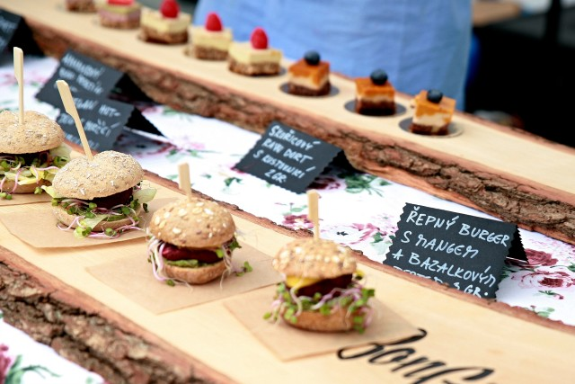
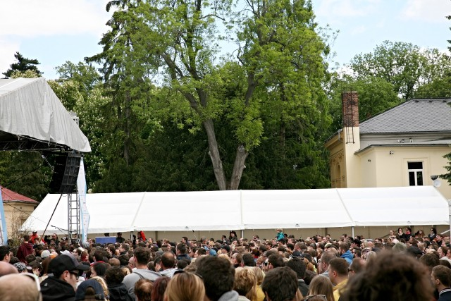
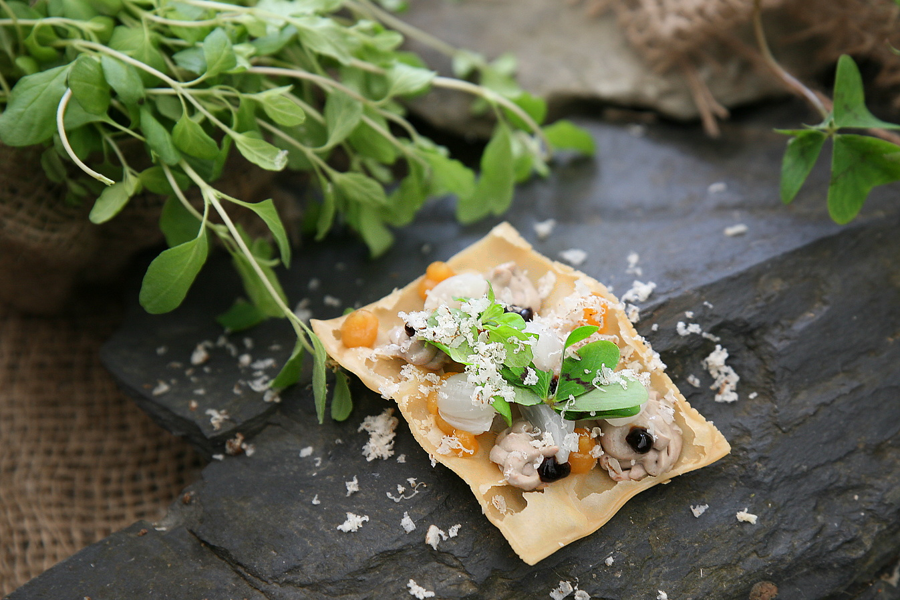

<!DOCTYPE html>
<html lang="cs-cz"></html>
<html>
  <head>
    <meta charset="utf-8" />
    <link rel="stylesheet" href="friends.css" type="text/css" />
    <title>FoodFestival</title>
  </head>
  <header>
      <h1>
          F<h10>◉</h10>O<h11>◉</h11>O<h12>◉</h12>D<h10>◉</h10>T<h12>◉</h12>R<h11>◉</h11>C<h10>◉</h10>K<H12>◉</H12>
      </h1>
  </header>

  <body>
    <div class="grid-container">
      <div class="item2">
        <div class="background">
          <div class="sidenav">
            <h2>Navigace</h2>
            <a href="index.html">Domovská stránka</a>
            <a href="Foodfestival.html">FoodFestival</a>
            <a href="Video.html">Video z FoodFestivalu</a>
            <a href="KdeSeNaChazime.html">Kde se nacházíme</a>
            <a href="Fotogalerie.html">Fotogalerie</a>
            <a href="Priprava.html">Příprava</a>
          </div>
        </div>
      </div>
      <div class="centrovani">
        <div class="item3">
          <h3>Food Festival</h3>
          <p>
            Moravská metropole Olomouc – květen 2016 – Smetanovy sady = Garden
            Food Festival Vydali jsme se v neděli (festival se konal i v
            sobotu). Počasí vyšlo, což je základ pro food festival, který se
            koná venku. Hlavním lákadlem bylo výborné jídlo, prezentace
            lokálních výrobců a hvězdy jako Zdeněk Pohlreich, Halina Pawlowská a
            Lukáš Hejlík.
          </p>
          
          <p></p>
          <h3>Organizace festivalu, místo, program a výběr restaurací</h3>
          <p>
            Kladně hodnotím celkovou organizaci festivalu. Jedinou drobnost,
            kterou bych sama za sebe vylepšila, tak zvětšit krapet prostor, a to
            hlavně pro stánky restaurací a prodejců. Umístění stánků na uličku
            těsně vedle sebe a po obou stranách není zrovna šťastné – fronty
            lidí čekajících na jídlo a k tomu davy proudících lidí. Možná že to
            vzhledem k areálu není možné, ale pokud něco změnit, pak toto. Jinak
            jsme byli skutečně spokojení. Bylo dostatek místa na sednutí, ať už
            na lavičkách se stoly nebo na trávníku. Pro děti dětská sekce a
            skákací stan. Program velice pestrý, největší zájem byl samozřejmě o
            hvězdu festivalu – Zdeňka Pohlreicha.
          </p>
          <p>
            Během celého víkendu se hlasovalo o nejlepší restauraci. U
            návštěvníků to vyhrál Lobster Family a u nás na plné čáře
            StenkoFoodTrck, kterému jsem věnovala
            <i>samostatnou recenzi.</i>
            <p></p>
            
          </p>
          <h3>Top výběr z food festivalu</h3>
          <p>
            Musím přiznat, že se nenašlo žádné jídlo, které by pro nás bylo
            naprostým propadákem, a že jsme toho ochutnali skutečně hodně. Proto
            pro vás vybírám náš top (hodnotili jsme si do programu jídla na
            stupnici do 10). StenkoFoodTrck už více zmiňovat nebudu, ale jejich
            Boží milosti a Chléb vezdejší s vepřovým… prostě ach!
          </p>
          
        </div>
      </div>
      <div class="background">
        <div class="item4">
          <h2>Otevřeno</h2>
          <p>Po:08:00 - 16:00</p>
          <p>Út:08:00 - 16:00</p>
          <p>Stř:08:00 - 16:00</p>
          <p>Čt:08:00 - 16:00</p>
          <p>Pá:08:00 - 15:00</p>
          <p>So:08:00 - 12:00</p>
        </div>
      </div>

      <div class="item5">Copyright ©StenkoBProduction</div>
    </div>
  </body>
</html>
